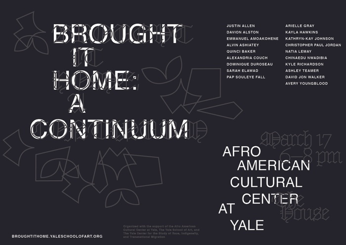

YALE SCHOOL OF ART
Yale School of Art 1156 Chapel Street, POB 208339 New Haven, Connecticut, 06520-8339


ABOUT US
The Yale School of Art is a graduate school that confers MFAs in Graphic Design, Painting/Printmaking, Photography, and Sculpture; and offers undergraduate-level art courses to Yale College students. Our website exists as an ongoing collaborative experiment in digital publishing and information sharing. It functions as a wiki—all members of the School of Art community have the ability to add new, and edit most existing content.
ON THIS PAGE
HAPPENING AT SOA
Poster design by Kathryn-Kay Johnson, Graphic Design MFA ‘22, and Kyle Richardson, Graphic Design MFA '23.
COMMUNITY BULLETIN BOARD
FACULTY/ALUMNI: POST YOUR ART APPRENTICESHIP/INTERNSHIP OPPORTUNITIES FOR UNDERGRADUATES The Yale Arts Apprenticeship Program is an initiative that connects Yale undergraduates, particularly those on financial aid, with professional arts practitioners of any discipline. As an option within Yale’s Summer Experience Award (SEA) funding model, the Arts Apprenticeship must fulfill the same basic requirements. Additional details, as well as those specific to the Arts Apprenticeship are included below. Yale faculty, alumni, or other arts practitioners interested in featuring positions through the program should contact Yale’s Creative Careers advisor. Which Opportunities are Eligible? Must be at least 30 hours/week, for at least 8-weeks over the summer months. Those 8-weeks do not have to be continuous if the mentoring Arts Practitioner agrees on a different schedule. The time commitment need not all be in direct contact with the Arts Practitioner. Independent projects, tasks, research, etc. can comprise much of the experience, as long as the Arts Practitioner is checking in regularly with the student to provide oversight and career-based context. The opportunity cannot be with a for-profit organization. The engagement for an Arts Apprenticeship should be directly with an individual Arts Practitioner and not with a company. The only exception to this would be if the company overseeing the apprenticeship were a registered non-profit organization. For more information: https://ocs.yale.edu/channels/arts-apprenticeship/ To post a job, contact: https://ocs.yale.edu/staff-list/#derek-i-webster
A MESSAGE FROM COMMUNICATIONS:
All members of the SoA community are invited to edit the majority of the wiki however they like, but we ask that any non-curricular projects or initiatives that you would like to share be added to this section of the homepage. Students are also invited to reach out to Assistant Director of Communications Lindsey Mancini if they would like additional support from the School in bringing attention to their work and endeavors.
CALENDARS AND NEWSLETTERS
NEW CALENDARS BEGINNING SUMMER 2020 Public Calendar Containing those events open to the public. School of Art in the World Containing events and exhibitions hosted by, led by, or featuring members of the School of Art community. Community Calendar Containing those events open only to the SoA community.